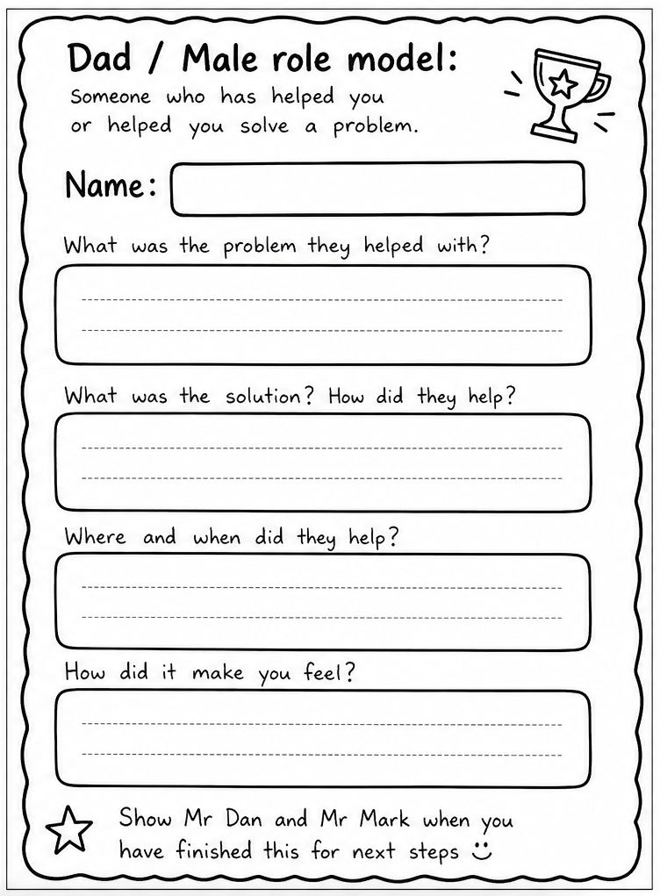
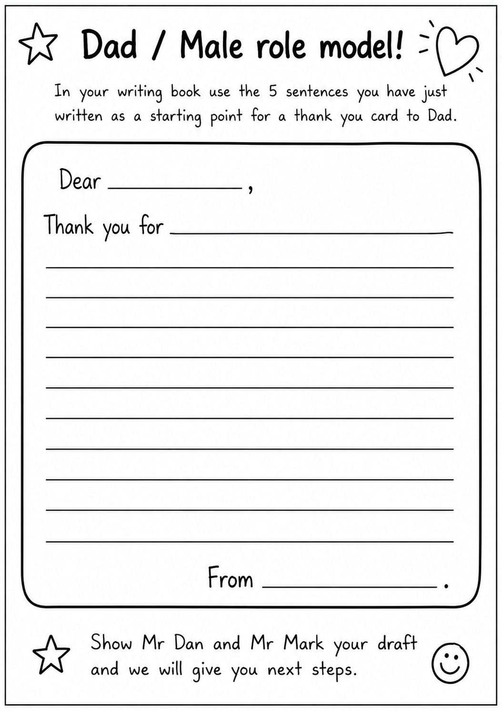

I made these for a Father's Day writing lesson during my placement. Students plan a short recount about a time someone helped them, draft it as a thank-you message, then copy it neatly onto a card.
Objective: Planning and writing a short recount (the problem, how they helped, where and when, and how it felt) and turning it into a thank-you message

Four questions take students through a simple recount structure: the problem, the solution, where and when, and how it made them feel.
Why "Dad / Male role model": not every child has a dad in their life, so the sheet opens it up to anyone who has helped them. Everyone in the class can write about someone real.
Download sentence builder
Students turn their answers into a short message: Dear…, Thank you for…, From…
Download draft templateOnce their draft has been checked, students copy it neatly onto their Father's Day card.